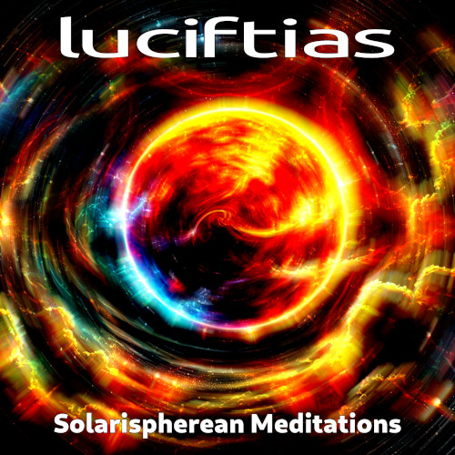

New Album Release!
Solarispherean Mediations
New album now available on Bandcamp, Funkwhale (via Open.audio), Bandwagon.fm, and Internet Archive
The source material for this album goes back over three years to an improvised guitar piece I recorded on the morning of 27 November 2021. After such an extended period of time, I thought I would end 2024 by sharing it at last.